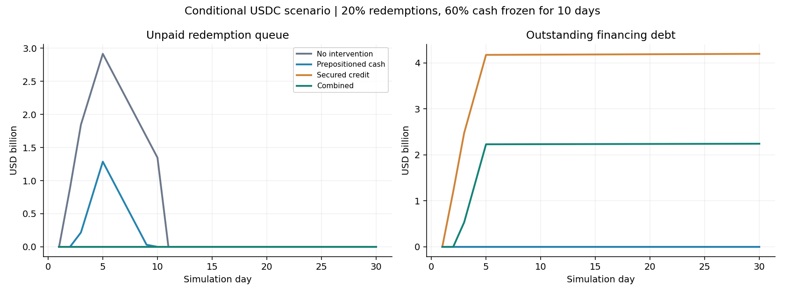
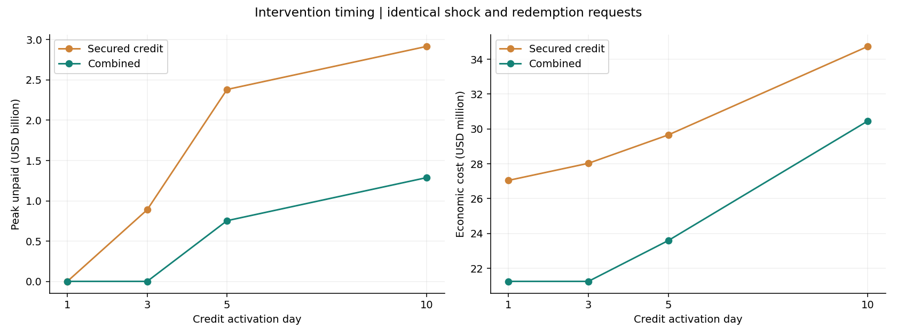
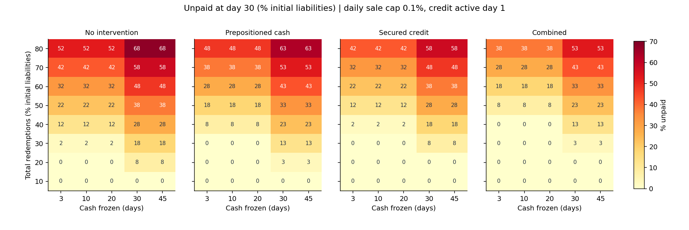

Stablecoin depegging risk prediction and reserve stress testing
Midterm results: historical events and a comparison of reserve interventions.
Open the interactive prototypeAlignment with the proposal
The project retains the proposal's two-stage framing: depegging risk prediction and issuer reserve stress testing. This midterm prototype demonstrates the second stage through historical event analysis and conditional intervention comparisons. Prediction experiments remain exploratory; the prototype does not establish a validated forecast-to-intervention pipeline.
The larger cash buffer reallocates existing assets before the shock. Additional liquidity support is modelled as a secured credit facility with fees, interest, collateral constraints, and outstanding debt. The combined intervention is an additional comparison, not a relabelled reserve-rebalancing policy. A distinct reserve-rebalancing strategy remains future work.
Inputs and assumptions
Six selected events can be explored using observed daily prices. Only the SVB-USDC case has an attached reserve simulation. The February 2023 USDC report provides total reserves of USD 42.456 billion and initial stablecoin liabilities of USD 42.405 billion. Modelled net cash is USD 10.779 billion, including signed settlement adjustments assumed settled before the shock.
The report was signed on March 30, 2023, after the event; publication timing is unverified. The snapshot is therefore a retrospective input, not evidence of information available for advance intervention.
The default scenario assumes cumulative redemptions of 20%, 60% of baseline net cash frozen for 10 days and released on day 11, no Treasury market-value shock, a 1% liquidation haircut, and a daily sales cap of 1% of original Treasury holdings. The horizon is 30 days. Requests arrive over the first five days in proportions of 40%, 25%, 15%, 10%, and 10%.
The cash-buffer target is 30% of initial liabilities, prepared 30 days before the shock at a 4% annual opportunity spread. Credit is capped at 10% of initial liabilities, costs 8% annual interest plus a 0.5% annual commitment fee, and requires collateral equal to 110% of principal. Extra cash is assumed outside the frozen channel; credit is assumed precommitted. These are scenario assumptions, not fitted historical parameters.
Intervention comparison
Amounts below are in USD billion. Recovery refers to clearing redemption backlogs, not restoration of the secondary-market peg. Economic cost includes the opportunity cost of cash; outstanding debt is reported separately.
| Intervention | Backlog clearance | Peak backlog | Economic cost | Ending debt | Min. net coverage |
|---|---|---|---|---|---|
| No intervention | Day 11 | 2.915 | 0.0285 | 0.000 | 100.065% |
| Larger cash buffer | Day 10 | 1.286 | 0.0289 | 0.000 | 100.086% |
| Additional liquidity support | No backlog | 0.000 | 0.0270 | 4.196 | 100.072% |
| Combined intervention | No backlog | 0.000 | 0.0212 | 2.242 | 100.108% |

In this scenario, the larger cash buffer reduces the peak backlog. Credit available from day 1 and the combined intervention avoid a backlog, but both retain financing obligations at the end of the horizon. Their resource inputs differ; the results do not establish equal-budget superiority.
Intervention timing
Only the credit activation day changes. All interventions face the same exogenous requests and shock. Cash buffers are always prepared before the shock. Amounts are in USD billion.
| Intervention | Credit starts | Clearance | Peak backlog | Economic cost | Ending debt |
|---|---|---|---|---|---|
| Additional liquidity support | Day 1 | No backlog | 0.000 | 0.0270 | 4.196 |
| Combined intervention | Day 1 | No backlog | 0.000 | 0.0212 | 2.242 |
| Additional liquidity support | Day 3 | Day 5 | 0.889 | 0.0280 | 3.881 |
| Combined intervention | Day 3 | No backlog | 0.000 | 0.0212 | 2.242 |
| Additional liquidity support | Day 5 | Day 5 | 2.382 | 0.0297 | 3.249 |
| Combined intervention | Day 5 | Day 5 | 0.753 | 0.0236 | 1.611 |
| Additional liquidity support | Day 10 | Day 10 | 2.917 | 0.0347 | 1.670 |
| Combined intervention | Day 10 | Day 10 | 1.288 | 0.0305 | 0.034 |

Later funding cannot erase a backlog that has already occurred. This demonstrates conditional timing effects, not the predictive ability to issue an early warning.
Failure boundaries and solvency
Liquidity failure means a remaining backlog on day 30. A solvency warning means negative equity on at least one day. The boundary grid tests redemptions from 1% to 80%, in one-percentage-point increments, across freeze durations of 3, 10, 20, 30, and 45 days and daily sales caps of 0.1%, 1%, and 3%. Credit starts on day 1.
The table below fixes the freeze at 10 days and the daily sales cap at 1%. Brackets locate the first tested backlog failure, not an exact or real-world safety threshold.
| Intervention | First backlog failure bracket | First negative-equity point |
|---|---|---|
| Larger cash buffer | (52%, 53%] | 43% |
| Combined intervention | (61%, 62%] | 32% |
| Additional liquidity support | (57%, 58%] | 26% |
| No intervention | (47%, 48%] | 38% |
Liquidity support can extend payment capacity while its fees and interest consume a thin equity cushion. In this slice, negative equity appears earlier under credit alone even though the first backlog failure occurs at a larger redemption shock. Once equity becomes negative, subsequent paths are accounting scenarios, not executable commitments: insolvency resolution is not modelled.

The heatmap fixes the daily sales cap at 0.1%. A 30-day and a 45-day freeze both prevent release within the observation window, so they produce identical terminal outcomes here.
Validation and limitations
The prototype includes 300 selectable configurations and 1,200 intervention runs, plus 4,800 boundary runs. All 180,000 daily ledgers were checked for balance-sheet identities, redemption accounting, collateral constraints, loss reconciliation, and clearance dates. Maximum accounting error: USD 0.00006316.
Historical prices do not capture intraday lows. Public disclosure timing and direct reserve operating rights remain unverified. Requests are exogenous and identical across interventions; confidence feedback, endogenous runs, market-price formation, repayment, refinancing, and insolvency resolution are not modelled. The findings are conditional scenario outcomes, not causal estimates of real-world policy effects.
Next steps are evidence-based parameter ranges, equal-budget comparisons, a separate reserve-rebalancing policy, and a second case with adequate reserve evidence.
Case CSVTiming CSVBoundary CSVAccounting checksManifestPresentation notes